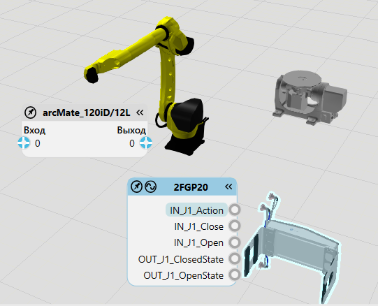
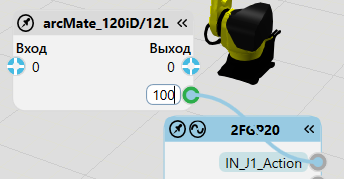
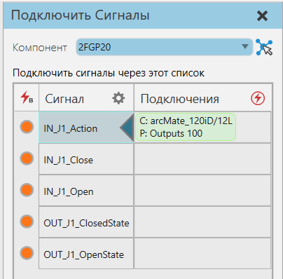
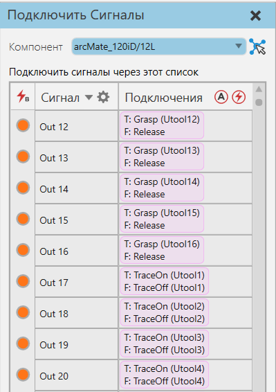
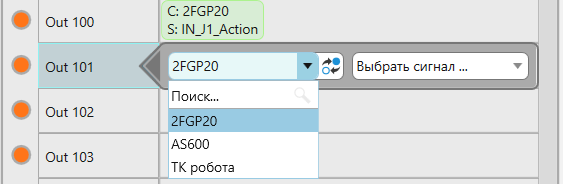

Команда Подключить сигналы позволяет подключать сигналы компонентов, а также входы и выходы роботов. В настоящее время можно подключать только сигналы логического типа. Доступные сигналы и соединения основаны на выбранном компоненте в трехмерном мире.

Редактор Сигналов
Вы можете подключать сигналы с помощью редакторов в 3D-мире. Редактор выбранного компонента выделен, тогда как редактор другого компонента с совместимыми сигналами либо виден, либо свернут в виде кнопки развертывания.

Подсказка: Расположение редактора автоматически подстраивается под ваш вид. У вас есть возможность закрепить редактор, чтобы зафиксировать его местоположение в окне просмотра.
Компоненты
Сигнал компонента указан в его редакторе вместе с точкой соединения. Соединение между двумя сигналами обозначается проводом.
Роботы
Входы и выходы робота разделены в его редакторе: входы слева и выходы справа. Поскольку робот может иметь большое количество сигналов, редактор покажет только один доступный вход и выход, а также все существующие соединения. Вы можете щелкнуть вход или выход, чтобы изменить номер порта. Мы рекомендуем использовать в роботе сигналы со 100 и далее, поскольку сигналы с 1 по 99 зарезервированы для сигнальных действий, например захвата и отпускания. Если вы меняете номер порта соединения, вы изменяете сигнал робота для этого соединения.

Задачи
Чтобы добавить соединение, выполните одно из следующих действий:
·Щелкните точку подключения сигнала в другом компоненте. Сигнал попытается автоматически подключиться к сигналу в выбранном компоненте.
·Перетащите точку соединения сигнала, чтобы отобразить провод, а затем перетащите провод в точку соединения в другом компоненте.
Чтобы удалить соединение:
·Нажмите на провод.
Панель Задач
Вы можете соединить сигналы с помощью панели задач и таблицы Подключить сигналы.

Сигнал
Столбец Сигнал перечисляет каждый сигнал по имени. Если выбранный компонент является роботом, вход указан как Вход <номер>, а выход как Выход <номер>.
Вы можете сортировать сигналы по имени, а также фильтровать сигналы по типу и соединению. Например, у вас есть варианты для перечисления подключенных сигналов, входов и выходов выбранного робота и всех других логических сигналов выбранного компонента.
Подсказка: Если выбранный компонент является роботом, вы можете сортировать входы и выходы тремя способами:
·I/O по возрастанию - Вход 0… Выход N
·I/O по убыванию - Вход N… Выход 0
·По направлению - Вход 0, Выход 0… Вход N, Выход N
Подключения
В столбце Подклчения перечислены соединения сигнала. Соединение — это сигнал в другом компоненте.
Примечание: Если выбранный компонент является роботом, в столбце Подключения также будет указано действие, сопоставленное со значением выхода.

Задачи
Чтобы добавить соединение:
1.Нажмите на сигнал из списка. Это отобразит помощник для выбора доступного подключения.
2.Используйте помощник, чтобы выбрать компонент и сигнал для нового соединения.
Чтобы удалить соединение:
1.Нажмите на сигнал из списка.
2.Используйте помощник для удаления соединения.
